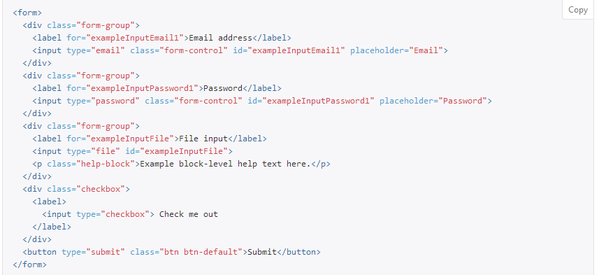
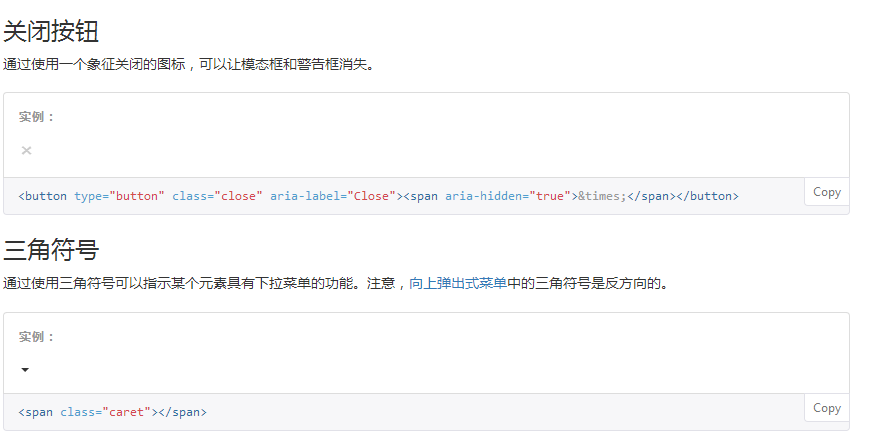
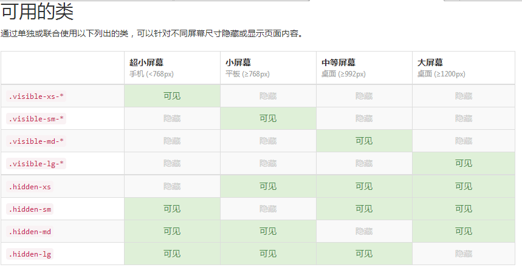

bootstrap组件:
如何使用:出于性能的考虑，所有图标都需要一个基类和对应每个图标的类。把下面的代码放在任何地方都可以正常使用。注意，为了设置正确的内补（padding），务必在图标和文本之间添加一个空格。
- 不要和其他组件混合使用:图标类不能和其它组件直接联合使用。它们不能在同一个元素上与其他类共同存在。应该创建一个嵌套的 标签，并将图标类应用到这个 标签上。
- 只对内容为空的元素起作用:图标类只能应用在不包含任何文本内容或子元素的元素上。
- 改变图标字体文件的位置:Bootstrap 假定所有的图标字体文件全部位于 ../fonts/ 目录内，相对于预编译版 CSS 文件的目录。如果你修改了图标字体文件的位置，那么，你需要通过下面列出的任何一种方式来更新 CSS 文件： 在 Less 源码文件中修改 @icon-font-path 和/或 @icon-font-name 变量。 利用 Less 编译器提供的 相对 URL 地址选项。 修改预编译 CSS 文件中的 url() 地址。 根据你自身的情况选择一种方式即可。
- 图标的可访问性:现代的辅助技术能够识别并朗读由 CSS 生成的内容和特定的 Unicode 字符。为了避免 屏幕识读设备抓取非故意的和可能产生混淆的输出内容（尤其是当图标纯粹作为装饰用途时），为这些图标设置了 aria-hidden="true" 属性。如果你使用图标是为了表达某些含义（不仅仅是为了装饰用），请确保你所要表达的意思能够通过被辅助设备识别，例如，包含额外的内容并通过 .sr-only 类让其在视觉上表现出隐藏的效果。
如果你所创建的组件不包含任何文本内容（例如， button 内只包含了一个图标），你应当提供其他的内容来表示这个控件的意图，这样就能让使用辅助设备的用户知道其作用了。这种情况下，你可以为控件添加 aria-label 属性。
 下拉菜单
用于显示连接列表的可切换、有上下文的菜单。下拉菜单的javaScirpt插件让它具有了交互性。将下拉菜单触发器和下拉菜单都包裹在 .dropdown 里，或者另一个声明了 position: relative; 的元素。然后加入组成菜单的 HTML 代码。

- 对齐：B默认情况下，下拉菜单自动沿着父元素的上沿和左侧被定位为 100% 宽度。 为 .dropdown-menu 添加 .dropdown-menu-right 类可以让菜单右对齐。可能需要额外的定位，不建议使用。pull-right
- 标题：在任何下拉菜单中均可添加标题来标明一组动作。在li标签中用.dropdown-header表示
- 分割线：为下拉菜单添加一条分割线，用于将多个链接分组。在li标签中用.divider表示
- 禁用的菜单项：为下拉菜单中的li标签元素添加.disabled类，从而禁用相应的菜单项。（在css样式中作为属性使用）
按钮组：
通过按钮组容器把一组按钮放在同一行里。通过与按钮插件联合使用，可以设置为单选框或多选框的样式和行为。
- 按钮工具栏：把一组 div class="btn-group" 组合进一个 div class="btn-toolbar"中就可以做成更复杂的组件。
- 尺寸：只要给 .btn-group 加上 .btn-group-* 类，就省去为按钮组中的每个按钮都赋予尺寸类了，如果包含了多个按钮组时也适用。如.btn-group btn-group-lg
- 嵌套:想要把下拉菜单混合到一系列按钮中，只须把 .btn-group 放入另一个 .btn-group 中。
- 垂直排列:让一组按钮垂直堆叠排列显示而不是水平排列。分列式按钮下拉菜单不支持这种方式。用.btn-group-vertical表示
- 两端对齐排列的按钮组：只须将一系列 .btn 元素包裹到 .btn-group.btn-group-justified 中即可。
- 按钮式下拉菜单：把任意一个按钮放入 .btn-group 中，然后加入适当的菜单标签，就可以让按钮作为菜单的触发器了。
- 输入框组：通过在文本输入框 前面、后面或是两边加上文字或按钮，可以实现对表单控件的扩展。为 .input-group 赋予 .input-group-addon 或 .input-group-btn 类，可以给 .form-control 的前面或后面添加额外的元素。 （input、.input-group、span搭配使用）
导航：
Bootstrap 中的导航组件都依赖同一个 .nav 类，状态类也是共用的。改变修饰类可以改变样式。
- 标签页:注意 .nav-tabs 类依赖 .nav 基类。
- 胶囊式标签页:HTML 标记相同，但使用 .nav-pills 类:胶囊是标签页也是可以垂直方向堆叠排列的。只需添加 .nav-stacked 类。
- 两端对齐的标签页:在大于 768px 的屏幕上，通过 .nav-justified 类可以很容易的让标签页或胶囊式标签呈现出同等宽度。在小屏幕上，导航链接呈现堆叠样式。(两端对齐的导航条导航链接已经被弃用了。)
导航条：
导航条是在您的应用或网站中作为导航页头的响应式基础组件。它们在移动设备上可以折叠（并且可开可关），且在视口（viewport）宽度增加时逐渐变为水平展开模式。
- 品牌图标:将导航条内放置品牌标志的地方替换为
元素即可展示自己的品牌图标。由于 .navbar-brand 已经被设置了内补（padding）和高度（height），你需要根据自己的情况添加一些 CSS 代码从而覆盖默认设置。
- 表单：将表单放置于 .navbar-form 之内可以呈现很好的垂直对齐，并在较窄的视口（viewport）中呈现折叠状态。 使用对齐选项可以规定其在导航条上出现的位置。
注意，.navbar-form 和 .form-inline 的大部分代码都一样，内部实现使用了 mixin。 某些表单组件，例如输入框组，可能需要设置一个固定宽度，从而在导航条内有合适的展现。 - 按钮：对于不包含在 form 中的 button 元素，加上 .navbar-btn 后，可以让它在导航条里垂直居中。有一些对于为辅助设备提供可识别标签的方法，例如， aria-label、aria-labelledby 或者 title 属性。如果这些方法都没有，屏幕阅读器将使用 placeholder 属性（如果这个属性存在的话），但是请注意，使用 placeholder 代替其他识别标签的方式是不推荐的。
- 文本：把文本包裹在 .navbar-text中时，为了有正确的行距和颜色，通常使用 p标签。
- 固定在顶部：添加 .navbar-fixed-top 类可以让导航条固定在顶部，还可包含一个 .container 或 .container-fluid 容器，从而让导航条居中，并在两侧添加内补（padding）。（还可以去掉圆角）
- 静止在顶部：通过添加 .navbar-static-top 类即可创建一个与页面等宽度的导航条，它会随着页面向下滚动而消失。还可以包含一个 .container 或 .container-fluid 容器，用于将导航条居中对齐并在两侧添加内补（padding）。 与 .navbar-fixed-* 类不同的是，你不用给 body 添加任何内补（padding）。
- 反色的导航条：通过添加 .navbar-inverse 类可以改变导航条的外观。